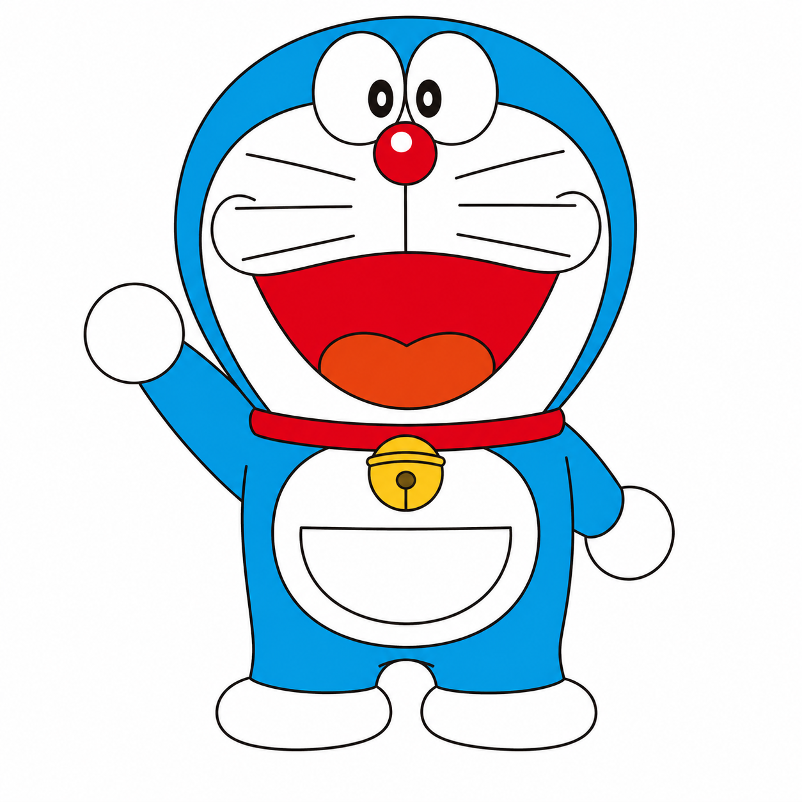
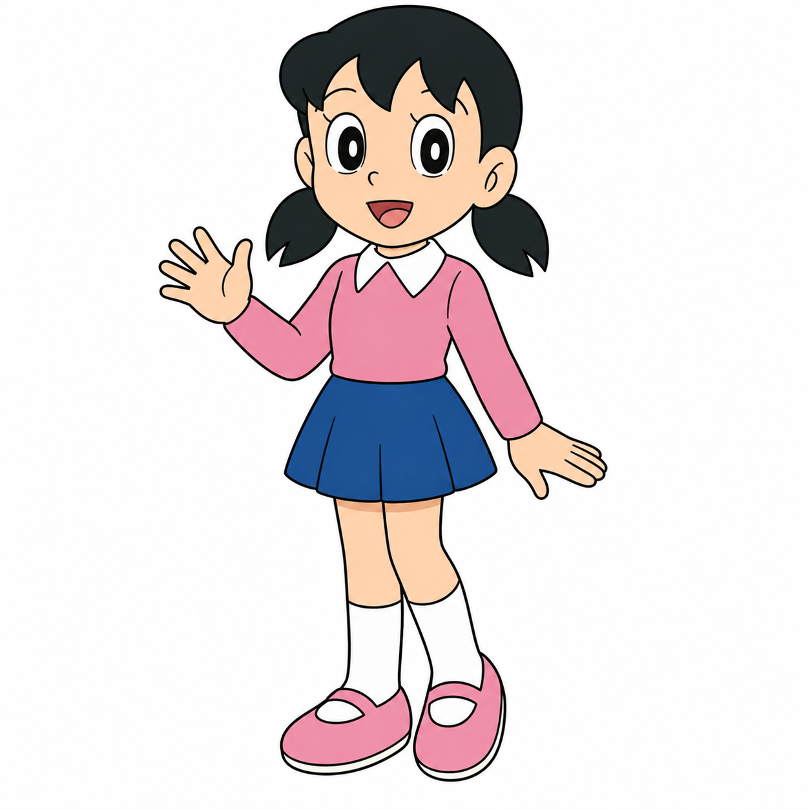

22nd
Century origin
This project is designed to bring the Doraemon universe to life. Instead of just watching the story, you can explore characters, understand gadgets, store them in your pocket, and actually play as Nobita in a side-scrolling adventure.

Century origin
Magic pocket
Interactive modules
Best score
Doraemon is a robotic cat from the 22nd century who travels back in time to help Nobita Nobi. Nobita often struggles with school, confidence, and daily challenges. Doraemon uses futuristic gadgets to help him, but things rarely go exactly as planned.
What makes Doraemon unique is how simple problems turn into important lessons. Nobita usually looks for shortcuts, Doraemon provides a gadget, and the outcome teaches responsibility, patience, and better decision-making.
Gadgets are at the heart of Doraemon’s world. Each one solves a problem, but also teaches a lesson.
Allows instant travel to different places.
Lets Nobita fly and avoid obstacles.
Shrinks objects and reduces risk.
Changes the state of objects over time.

The robotic cat who helps Nobita grow into a better person.

A kind but careless boy who learns through his experiences.

A caring and thoughtful friend who represents balance.

Strong and aggressive, but still protective at times.

Smart and stylish, often used for humor and contrast.
The game combines smoother controls, better visuals, and gadget-based mechanics to create a more engaging experience.